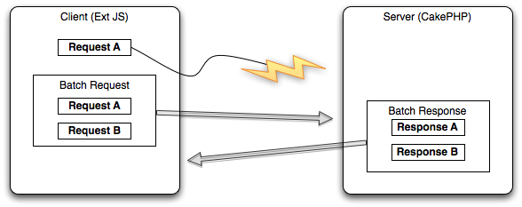

One of the main challenges with asynchronous applications is to keep the data both on the client and the server consistent. First of all we need to take a look on how ExtJS handles lost requests or responses in order to ensure consistency. When ExtJS sends a request to the server it first checks if it has received a response for previous requests. If it has not received a response for a previous request it will resend the old request together with the new request. This is shown in figure 3.
 Figure 3: ExtJS resends requests with further requests if it gets no response for the first one.
If the request is lost there is no problem for the consistency. Bancha can handle batch requests and will therefore execute all requests and sends a batch response to the client. The problem is when the request is not lost, but when either the response is lost or when the execution of a request takes a long time and therefore the request is resent by ExtJS. To ensure consistency in these scenarios Bancha saves the transaction ID of the request that is currently processed. If the request is later resent by ExtJS, Bancha knows that this request is currently processed and discards it. Bancha will also discard other requests with higher transaction IDs in order to ensure consistency. This is required because Bancha does know nothing about the dependencies of different requests. For example, Bancha discards Request A which creates a new user because it this request is currently processed in another process. Request B could be either an dependent task, like editing the user created in Request A or a completely independent task like deleting another user. While this example is trivial and could be resolved by an algorithm there are far more complicated use cases. For example, Request B could be create an article and add the user created in Request A as author. Thus Bancha discards all requests if a request with a higher transaction ID is currently handled. It is the duty of ExtJS to resend the discarded requests either when another request is sent or after a timeout.
One of the challenges when developing the consistent model functionality for Bancha is to test the written code. PHP offers no possibility to run code in parallel and therefore it is not easily possible to simulate the scenario where a request takes a very long time to process, which results in resending this request. Our solution for this problem is to move the code to handle the request in a separate test script and use exec() to execute two PHP scripts simultaneously in the background.
The Consistent Model is implemented in Bancha by adding a client id to the request. This ID is generated on the server when the client requests the metadata and is then transferred with every request to the server. Bancha creates a temporary file for every client where it stores the currently processed transaction ID. When another request from the same client with an equal or higher transaction ID arrives at the server, the server discards this request. The client needs to resend this request later. In general this is no problem because Ext Direct resends automatically all requests, where it hasn’t received a response.